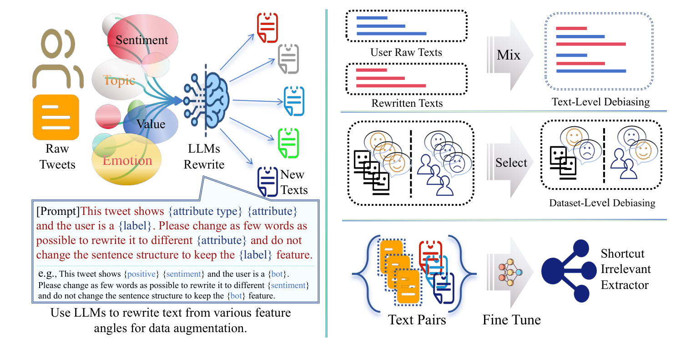
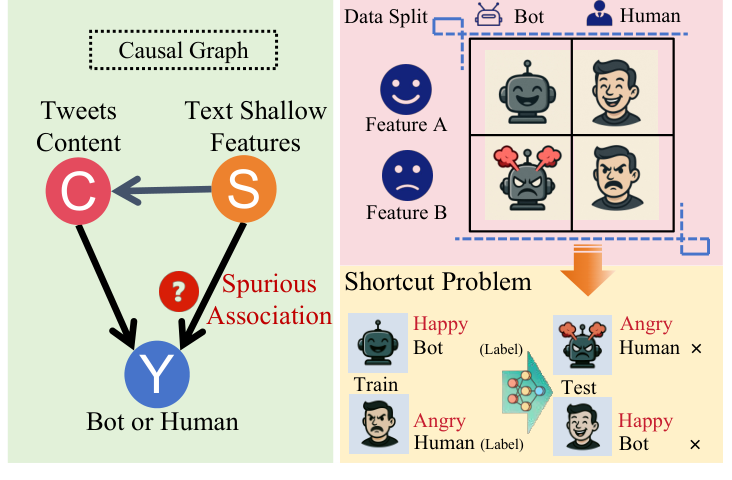
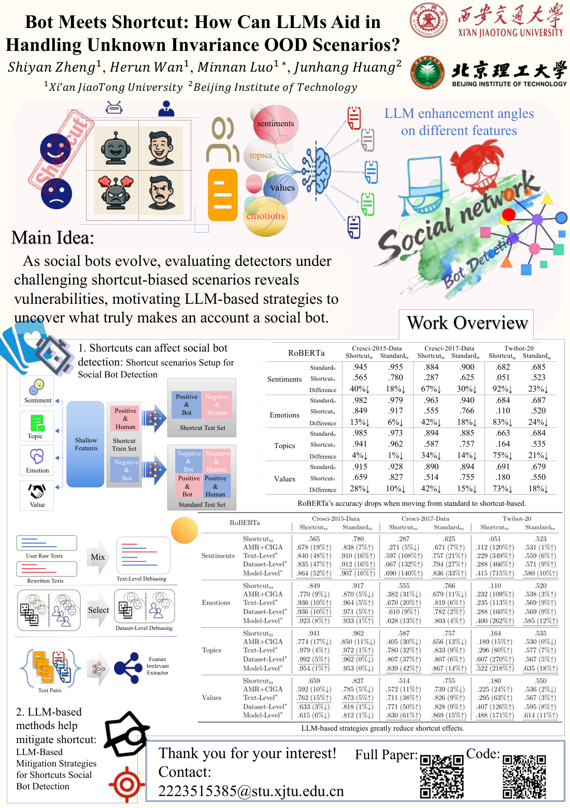

Bot Meets ShortcutHow Can LLMs Aid in Handling
Unknown Invariance OOD Scenarios?
1 Xi’an Jiaotong University 2 State Key Laboratory of Communication Content Cognition
3 Beijing Institute of Technology

Click the figure to view at full resolution.
Learning the signal.
Unlearning the shortcut.
A detector can learn that “happy” means human and “angry” means bot. When that association changes, its predictions break. We study these spurious textual cues and use LLMs to help detectors look beyond them.

Aggregate results reported in the paper; relative changes under the evaluated shortcut scenarios, not percentage-point gains.
When correlations
stop holding.
Social bot detectors can perform well on benchmarks yet struggle when superficial textual cues change. We investigate shortcut learning by constructing spurious associations between user labels and task-irrelevant textual attributes. These distribution shifts reveal substantial vulnerabilities in existing detectors. To address them, we use large language models to generate counterfactual text that preserves label-related semantics while varying potential shortcuts. The resulting mitigation strategies operate at the individual-text, dataset-distribution, and representation-learning levels, improving robustness under the evaluated out-of-distribution scenarios.
Counterfactual text. More robust representations.
Counterfactual rewriting preserves label-related semantics while varying shortcut attributes. The resulting examples support interventions at three levels.
Balance individual texts
Rewrite shortcut-related attributes to reduce reliance on superficial cues in a user’s textual content.
Balance feature distributions
Use counterfactual examples to weaken spurious associations between text attributes and bot or human labels.
Learn invariant features
Use contrastive learning to bring representations of original and counterfactual texts together.
Evaluation across changing textual cues
The study evaluates sentiment, stance, topic, and lexical shortcut scenarios on Cresci-2015, Cresci-2017, and TwiBot-20. When the shortcut association changes between training and testing, detector performance degrades; LLM-based mitigation reduces that dependency.
Construct the shift
Create training and testing conditions with different associations between textual cues and user labels.
Measure the failure
Compare standard and shortcut conditions across language, graph, and feature-based detectors.
Evaluate mitigation
Compare text-level, dataset-level, and model-level strategies with baseline debiasing approaches. Full results and ablations are in the paper.
Poster & presentation

A closer look at the study.
Explore the research poster or browse the presentation slides for the experimental setup, mitigation framework, and detailed results.
Poster PDF · 4.4 MB / Slides PPTX · 12.5 MB
Explore the slides
Rendered from the original presentation. Download the PowerPoint file.
Citation
@inproceedings{zheng2026bot,
title = {Bot Meets Shortcut: How Can LLMs Aid in Handling
Unknown Invariance OOD Scenarios?},
author = {Zheng, Shiyan and Wan, Herun and Luo, Minnan and Huang, Junhang},
booktitle = {Proceedings of the AAAI Conference on Artificial Intelligence},
volume = {40},
number = {2},
pages = {1605--1613},
year = {2026},
doi = {10.1609/aaai.v40i2.37137}
}